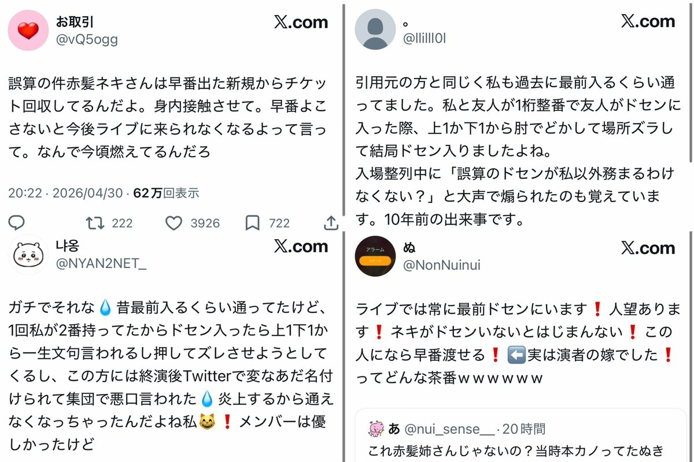

ゆず
@Yumi320521
RT @DEATHDOL_NOTE: 【知名度D / V系知名度SS】
0.1gの誤算
緑川裕宇 @0153_you
本カノ(通称 : 赤髪ネキ)
@krbr_az
備考
・10年間、常に最前ドセンが家族公認彼女
・権力で早番出た新規からチケット回収 https://t…

DEATHDOL NOTE
@DEATHDOL_NOTE
【知名度D / V系知名度SS】
0.1gの誤算
緑川裕宇 @0153_you
本カノ(通称 : 赤髪ネキ)
@krbr_az
備考
・10年間、常に最前ドセンが家族公認彼女
・権力で早番出た新規からチケット回収 https://t.co/GkAP5EHIdz